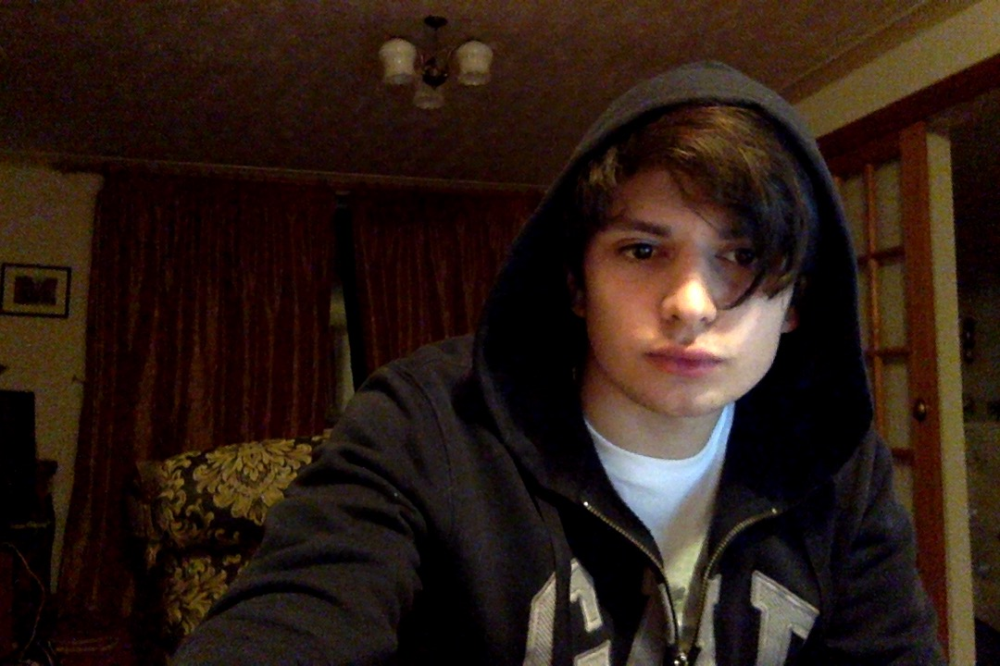

I was born in 1998 and grew up in York in the UK, but both of my parents are Lebanese and moved here some 7 years before my birth. At 13 years old my Dad moved to Qatar for work and the family moved to Egypt because we had ties and properties there. 13-17 was spent in Cairo, finishing my IGCSEs and A-Levels, before moving back to the UK and going to the University of Sheffield to get my bachelor’s degree in civil engineering which I attained last year. I’m now at the University of Leeds getting my masters of science in transport engineering whilst working part time.
That's the boring stuff.
I’m a pretty simple person at heart; I’m a bit of a perfectionist, I prefer a minimalistic lifestyle and I do what I love when I can and I fight for it when I can’t.
I like a wide variety of things, as most people do. I’m very much in love with triathlon, and of course, I love engineering, and these two things take up most of my time, but the thing is, both engineering and triathlon are mostly rigid; you train, you do the calcs and you get the results, which is great for my trust issues, but I’ll admit it does get tedious at times.
We are more than one dimensional after all.
This website then, is aimed to help me find a balance in my life and to be a place to explore and share some of my more creative thoughts that I seldom get to express elsewhere.
So let's picture a cube of creativity and define these dimensions.
This website will mainly cover three of my creative interests. The first, is writing. I love to write (and read for that matter). I've been journalling heavily since I was about 15 as a form of control and catharsis. I kind of admire literature; the connotations of words, the veiled meanings that can be detected in sentence structure and ultimately the perfection which can only be found in make believe.
Most of my writing is going to be done in the form of blog posts, so weekly summations, travel journals and race reports. I really enjoy writing short stories too, and with time (and a few late night drinks), I hope to upload some of them and perhaps start a series, but don't hold your breath just yet.
Next is photography. Ah, photography.
For a while I thought this entire skillset and in turn profession was a joke, but I’ve since found a lot of intricacy and enjoyment in photos. I use a Nikon D3500 as my main camera and an iPhone SE in surprise situations, and I mostly use Photoshop CS6 for post-processing.
I've only been doing photography seriously for a year so this is definitely my youngest interest and thus my weakest. Most of my photos will be featured in the travel blogs I cover, since getting out for good photos when not on holiday is difficult. I like to experiment with different kinds of photography, and I appreciate most forms, but truthfully I'm not a big fan of portrait photography; I think a scene speaks louder without people present.
Lastly, music. A bit of an odd one, since I have no idea how to formally fit it into this website. Regardless, music has a special place in my heart. I play piano (a lot nowadays), and guitar, but truthfully I find listening so much more enjoyable than playing. Music has helped me through my toughest moments, and I’ll refrain from being melodramatic and saying I wouldn’t be here without some song, but they’ve definitely eased my pain at times and fuelled my inspirations at others. Everyone deserves to be without pain, and I do find happiness in helping others, but for me at least, I've found when I'm at my lowest, I prefer to be completely alone with only my mind and my interpretations of songs. So sharing some undiscovered music.
That concludes it. I hope you find amusement in some of the things this website has to offer and if you have any questions or regards, be that praise, criticism or a constructive comment, please feel free to contact me.
Finally, if you want a touch more information about me, I suggest reading my first three blog posts where I give a bit more insight into my situation, hobbies and preferences.
- Majed
P.S. I’m a big believer in taking pictures for the moment, so here’s me at my laptop working on this exact page at 2am right now. I am very tired.
